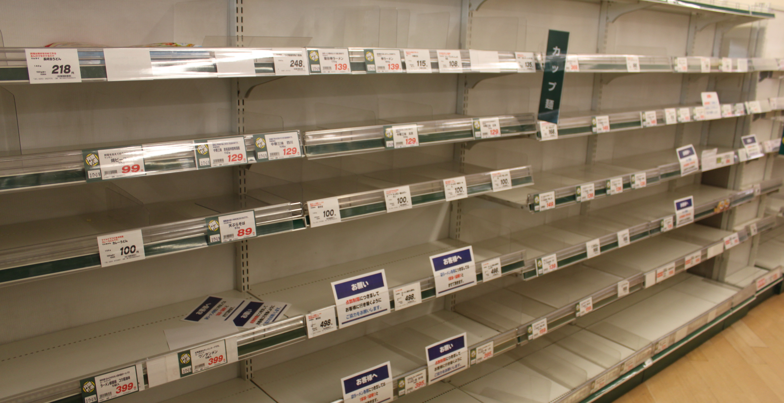

東日本大震災 東京・多摩地方、 および その周辺での体験記 はじめに |
<第１部> 「３月１１日のこと」 — もくじ — <第２部> 「地震や津波の起こるわけ」 <第３部> 「ふだんの生活への影響」 |
「作文ワールド」総合案内 「道場日記抄」 トップページ
作文打出の小づち
総もくじ
作文編 国語編 小論文編 閑 話
はじめに
（「道場日記抄」 ’１２年３月15日より）
千年に一度といわれる大震災から１年が過ぎた。振り返れば、道場にも少なからぬ感慨がある。
揺られている最中は、あまりの揺れの大きさに「第二関東大震災か」と思ったものだ。
その割には、拍子抜けするくらいに物的被害はなかった。
ところが、テレビをつけて驚いた。
震源は三陸沖、震度７、マグニチュード8.9（後に9.0）というのだ。
大津波警報が出され、ほどなく、
釜石港であったか、潮位の上がる様子が映し出され、
仙台平野のビニールハウスがどす黒い波に飲み込まれていく様子が映し出されていた。
翌日から、生徒諸君には一人一人に、
「われわれはあの大地震と同じ揺れの上に乗っていたのだ。
歴史に残る出来事だったのだから、自分の目で見、肌で感じたことを記録しておこう」と話し、
次の章立てで書くよう指示した。
１．3月11日のこと。
２．地震や津波の起こるわけ（メカニズム）。
３．ふだんの生活への影響。
それから約１か月の間、生徒諸君はせっせと書いた。
コピーで取っておいたものを引っ張り出してみると、厚さにして２cm近くある。
いい記録ができている。同時刻に同じ揺れに乗っていたとはいっても、それぞれに状況は異なる。
１年たったのを機に、これを順次掲載しよう。
互いの体験を知るのも、互いの参考になると思われる。
「もくじ」はこちら。
なお、東北関東太平洋沿岸の小学生・中学生・高校生に呼びかけている無料添削の『体験記』は、
このホームページには掲載しない。
公表については、生々しさもあるため、本人の意思を尊重する。
公表しないことを約束して、
この『体験記』の無料添削は引き続き受け付けている。
<第１部>「３月１１日のこと」
その時、生徒諸君は一人一人どこでどうしていたのだろうか。
取りあえず、「授業中」「部活中」「帰宅途中」「帰宅後」の
４つに分けて順次紹介しよう。
学年は震災当時のもので、
書いたのはたいていは次の学年にまたがっている。
１回に１〜２編、１週に３〜４編を掲載する予定である。
| その１．授業中 | その２．部活中 | その４．帰宅後 |
| １．琴美さん（小３） （東京・府中市） ２．洸太くん（小５） （東京・国分寺市） ３．ひなのさん（小５） （埼玉・入間市） ４．萌香さん（小６） （東京・板橋区） ５．太一くん（中１） （東京・国分寺市） ６．拓生くん（中１） （東京・東大和市） ７．海路くん（中１） （東京・調布市） ８．大陸くん（中２） （東京・調布市） |
９．さらさん（小６） （東京・多摩市） |
13.咲歩さん（小５） （東京・東村山市） 14．日菜さん（中２） （東京・東村山市） 15．悠くん（小３） （東京・国分寺市） 16．光亮くん（小５） （東京・国分寺市） 17．瑠智慧さん（小３） （東京・国立市） 18．笑さん（小３） （東京・国立市） |
| その３．帰宅途中 | ||
| 10．樹里さん（小５） （東京・国分寺市） 11．三鈴さん（小５） （東京・小金井市） 12．夏実さん（中２） （東京・武蔵野市） |
東日本大震災… 「3月11日のこと」
その１（授業中）
たいていの諸君は1〜2度書き直している。
ここでは、その最終のものを紹介する。
| 3月11日、私は学校で強いゆれを感じた。こんな強いゆれは、生まれてからはじめてだ。先生はすぐに、大きな声で「つくえの下にもぐりなさい」と言った。上を見上げると、けいこうとうがゆれている。落ちてきそうで、とてもこわかった。ゆれがおさまると、児童は校庭にひなんした。先生は「宮ぎ県は今すごくゆれている」と言った。少したって、教室にもどって帰りのしたくをした。 帰るじゅんびをしてかえろうとすると、またゆれた。まだ余震がくると思うと、こわくなって、ランドセルをほうりなげて、つくえの下にもぐった。この日は地区はん下校となった。わたしのマンションはとても大きいマンションで、家の中が大変なことになっているだろうと先生が言った。 家に帰ると、ザリガニの水そうがたおれていなかった。「家が１階でよかった」と思った。９階の家ではしょっきだながたおれ、１３階の友だちの家はメチャクチャということだった。 その日の夜、テレビでいろいろなえいぞうを見た。宮ぎ県や岩手県では、つ波ですごいひがいをうけていた。家、車、板などが流されている、すごいえいぞうばかりだった。いちばんすごいと思ったのは、つ波が「わあ〜」といういきおいで家や車をのみこんでいったえいぞうだ。つ波が来ているのに走っていて、つ波にのまれそうになった車もあった。 次の日もニュースをずっと見ていた。ひなん所で食りょうが少ししかなく、寒い所でくらしている人がたくさんいた。こんな生活がいつまで続くのだろうと思った。 |
← わたしの家はとても大きいマンションにあるのだけど、家の中が…… 、 |
洸太くんは、ふさわしい表現を探して、
大好きな電子辞書とにらめっこをしながら書いていた。
もどる
| ３月１１日に大きな地震が起きました。その時、私は教室にいて、みんなと３月末に行われる「お楽しみ会」について計画を立てていました。揺れが起きてすぐ、私たちは机の下にもぐりこみました。机が小さいので、体を小さく丸めているのが大変でした。私の近くの友だちが気持ちが悪いと言ったので、私は大きな声で先生を呼びました。先生はすぐかけつけて、友だちの状態を確認していました。私は、だいじょうぶかな、私も気持ち悪くなったらどうしようと心配になりました。先生は「よったんだね。だいじょうぶだよ」と言いました。私はほっとしました。 それからしばらく揺れが続いていたので、机の下にもぐりこんだまま、いろいろなことを考えていました。ふと、私たちが今いる校舎のことが不安になりました。私の学校では５年生だけが校舎が違うのですが、この校舎はとても古く、まだ耐震工事をしていませんでした。そのため、今年建て替えることが決まっていました。私はこの校舎はつぶれるのではないかと怖くなりました。もう私は死んでしまうのではないかと思いました。私はこの校舎から逃げ出したくなりました。しばらくすると、地震はおさまりました。 私は避難訓練のときはいつも、きっと地震や火事は起こらないだろうなと思っていました。でも、今起きたのです。私はこの時、避難訓練の大切さに気づきました。 家に帰って、ニュースを見ると、津波が田んぼを飲み込んでいました。押し寄せる波の中には車や家が浮かんでいました。畑が次々に飲み込まれているのを見ると、声も出ませんでした。 |
← ……怖くなりました。揺れが大きいので、もう私は死んでしまうのではないかと…… |
大きな揺れを、木造校舎の中で耐えているのは、
相当の恐怖だったことだろう。
| 3月11日（金）、私は学校で６時間目の図工をしていました。２時45分ごろ、体が少しゆれているような気がして、窓のほうを見ました。カーテンが少しゆれていたので、私は先生に地震だと伝えました。その瞬間、大きなゆれがきて、先生はみんなに大声で、机の下に入れと言いました。私はあわてて机の下にもぐりこみました。防災頭巾は教室にあって、手元にはありませんでした。大きなゆれが長い時間続きました。家にいるお母さんが何か物につぶされているのではないかと心配になり、泣きそうになりました。 ゆれがおさまって校庭に避難したとき、お母さんが迎えに来てくれたので、その姿を見てほっとしました。妹もいっしょに３人で家に帰るとちゅう、お母さんは家の中がガラスの破片やいろんな物でうまっていること、また、お父さんや福島のおじいちゃん、おばあちゃんと連絡がとれないことを心配そうな声で話しました。 私の家は、２階建ての鉄筋の建物に後付けで建てた木造の家です。３階なので、家の中はコップやお皿が落ちていて、足の踏み場がなく、とても危ない状態だいうことで、お母さんが家の中を片づけている間、私と妹は１階に住んでいるおばといっしょに、近くに住んでいるおばあちゃんの家に歩いて行きました。おばあちゃんの家はお風呂屋さんです。本が少し落ちているぐらいでほとんど無事でした。 私と妹はお父さんのけいたいに電話をしました。なかなかつながらず、何十回目かにやっとつながり、お父さんの無事を確認することができました。その後、お母さんから福島のみんなが無事だったと連絡があり、私たちは少し安心しました。 夜になって、家に帰ってテレビを見ると、大きな津波が押し寄せる中を、すごいスピードで走って山のほうへ逃げていく車を見ました。たくさんの家が一瞬のうちにくずれていく映像も見ました。気仙沼という町が火の海になっていました。最初は、何がどうなっているのか分かりませんでしたが、津波のすごさを見ていると、涙が出そうになりました。 東京では電車がほとんど止まってしまいました。帰れなくなったなった人は会社に泊まり込んだということです。私のお父さんは車で通っているのですが、道路は大じゅうたいで、帰ってきたのは夜中でした。 |
← 私は図工室で工作を…… ○ お父さんの会社は都内の大田区にあって、おじいちゃんたちは白河市に住んでいるのだね。 |
あの日は多くの帰宅困難者が出、大渋滞が起きたが、
その一端をここから窺い知ることができる。
もどる
電車が止まったために、歩いて帰る人も大勢いたが、
お母さんも帰宅困難者の一人だった。
その夜の時点では、もちろん災害の程度は分からなかった。
もどる
同じ揺れの上にのっていても、
生徒諸君はそれぞれに違った体験をしている。
被害の出た学校もあった。
兄弟の例を紹介しよう。
| ３月１１日に大地震がありました。地震が起きたとき、僕は学校で国語の授業を受けていました。 隣の友だちが「あっ、地震だ」と言いました。それを聞いて、僕は地震に気がつきましたが、まだ初期微動でした。突然、それが大きくなりました。あまりに大きい揺れに、女子は叫び声を上げていました。窓が揺れ、天井の扇風機が落ちてきそうでした。先生の指示で机の下にもぐりました。しばらくすると揺れがおさまってきました。少しホッとしていると、またすぐに大きな揺れがきました。その後、もう一度大きな揺れがきました。ようやく地震がおさまり、授業を中断して、家に帰ることになりました。帰りのあいさつの時に、先生が「今の地震は東北のほうで起きて、震度は７、調布は震度５だった」と言いました。それを聞いた時、僕はとても恐ろしく、怖くなりました。 家に帰ると、家には誰もいませんでした。家の中は想像していたよりも散らかってなく、引き出しが少し開いているぐらいでした。テレビをつけてニュースを見ると、津波による被害が中継されていました。津波から逃げる人々、津波によって起きた住宅街を流れる濁流、など、様々な映像が目に飛び込んできました。 一番印象に残った映像は、津波が堤防を越えて水が町に流れ込み、町の奥深くまで流れて、その流れに乗って家が丸々流れていくところでした。 |
中学生ともなると、集団下校などはないようだ。
兄弟でも別々に帰っている。
兄弟でも学校や家の中で目にしたものは違うようだ。
もどる
その２．（部活中）
９．さらさん（小６ 東京・多摩市）
さらさんの学校はJR中央線沿いの武蔵野市にあり、
同市は都内の杉並区に隣接している。
自宅のある多摩市は南方の多摩川を越えた所にある。
| 小学校最後の部活動中に、巨大地震が起こりました。私たちは体育館でバレーボールをしていました。体育館は、バドミントン部と共同で使います。 突然、バドミントン部の先生が「壁に寄れ」と言いました。天井でバスケットバールのゴールががたがた揺れていたので、地震に気がつきました。部員たち、それに、先生方もみんな壁に寄りました。大きな揺れになったので、私たちは床に座り込み、揺れがおさまるのをじっと待ちました。5分くらいして揺れがおさまったので、５，６年生はグラウンドに集まりました。1年生から４年生までは帰宅途中でした。 グラウンドの端のほうには100メートルぐらいにわたって地割れが起きていました。５年生は相撲場の土俵に集まり、６年生は校舎と校舎の間の通路に集まりました。余震もおさまると、事務の方が毛布と砂糖湯を用意してくださいました。1人１カップの砂糖湯を飲み、２人で１枚の毛布にくるまりました。夕方、グラウンドで事務の方と先生方がいっしょになって炊き出しが始まり、私たちはご飯を食べました。 電車が止まっていたので、学校に泊まることになりましたが、親が迎えに来た人は帰りました。私は家が遠いので帰れないと思っていたら、友だちのお母さんが家に来てもいいと言ってくれたので、車に乗って友だちの家に行きました。友だちの家は近くの杉並区にあり、その家の近くに兄の学校の野球のグラウンドがあったので、兄もそこに合流しました。 友だちの家に着いて、ようやく母と連絡が取れました。母はあの時、新宿のデパートの地下で買い物をしていました。急に揺れたので、地下のシャッターが閉まって閉じ込められてしまいました。幸い、係りの人が開けてくれて、なんとか出られました。新宿にはおばあちゃんが住んでいるので、その日はそこに泊まりました。父は府中の会社にいました。社員の泊まるところを探したり、会社の鍵を閉めたりしなければならなかったので、最後まで会社にいました。家に帰ろうと車に乗りましたが、途中の橋が通行止めになっていたため、母のいる新宿のおばあちゃんの家に行くことにしました。いつもなら１時間ぐらいで着くのに、６時間余りかかったということでした。 次の日の朝、電車が動いていたので、家に帰りました。家の中は何の変化もありませんでした。お風呂場のドアがスライドして少し空いていたくらいでした。 |
○ 府中市は多摩川をはさんで、多摩市の対岸、つまり、武蔵野市や都区内の側にある。 |
ちなみに、中央線を都内とは反対の西に行くと、
小金井、国分寺、国立、立川市があり、
国分寺の南に府中市、そして、多摩市がある。
もどる
JR中央線はすぐに止まってしまったから、
危ういところだった。また、
電話が通じたのは、万に一つの幸運だった。
東北地方の状況を知って、もう一度大きな揺れがくると、
誰もが思ったことだろう。少なくとも、
停電が起きるなど、ライフラインが断たれる危惧はあった。
もどる
その日、生徒たちはいろいろな状況に置かれていたが、
こんな例もある。
12．夏実さん（中２ 東京・武蔵野市）
夏実さんはJRと私鉄を乗り継いで、世田谷区の学校に通っている。
そこから最も近いJR山手線のターミナル駅は渋谷で、
北に新宿や池袋がある。
| 3月11日に地震が起きたとき、私は友だち２人と池袋のカラオケ館にいました。 私たちは曲に合わせて踊っていたので、地震が起こっていても気がつかなかったのですが、だんだん揺れが大きくなってきて気がつきました。最初、私たちの個室の隣の部屋にいた人たちや、同じ６階にいた大人たちが次々と逃げていくため、私たちも逃げようとしましたが、まだ揺れている間は動かないほうがいいといいと思って、個室でじっとしていることにしました。その後すぐに両親と連絡を取り合い、無事を確認しました。家族全員が無事だということは分かったのですが、連絡を取り合っているうちに、JRが全線止まっていることを知って、私たちは帰れなくなってしまいました。 私たちは気をまぎらわせるために、自分が好きな曲や、元気の出そうな曲を歌い続けました。ipodでラジオを聞いたり、ワンセグでニュースを見たりして、外の様子は分かっていたので、不思議と怖くはありませんでした。 本来、中学生はカラオケ館には６時までしかいさせてもらえないのですが、ここを出ても帰れないし、両親も来ることができないので、友だちのお母さんが店長さんに連絡を取り、両親が来るまでいさせてもらうことになりました。その時はもう８時をまわっていて、今日中に帰ることはできないと分かっていたので、友だちと普段はできないような話や、自分が中学に車での自分のことなどを話しました。 午後１１時ごろ、客が混んできたということで、私たちは地下の宴会場の中の一番広い部屋に移されました。こんなに広い部屋はめったに見られないということで、そこで記念撮影をしたり、「ドーン、じゃんけんぽん」という遊びをしたりしました。ついに午前０時をまわって、することがなくなってしまったので、家から持ってきた本やマンガを読んで時間をつぶしました。 午前２時半ごろ、私の父が到着しました。店長さんやお世話になった店員さんにお礼を言って、友だち２人もいっしょに、もうすでに動いていた地下鉄で渋谷の父の職場に行くことにしました。父の職場に友だちの両親が来て、私たちはやっと自分の家に帰れることになりました。友だちと別れて、父の車で家に着いたのは、午前４時でした。 その日は家に帰れなくて、ほんとうはパニックになるところでしたが、仲のよい友だちといっしょにいるということが心の支えになって、落ち着いていられたのだと思います。 |
← ……と分かってきたので、 |
「帰りに盛り場でカラオケ」となると、家に帰って、
こっぴどく叱られたであろうが、
意外に、行動は健全であることが読み取れる。
ショッピングをする程度の気分なのだろう。
しかし、
魔の手は、やはり気にかかる。
もどる
まず、姉妹の場合から。
２人とも近隣市の学校に電車で通っている。
13.咲歩さん（小５ 東京・東村山市）
| 3月11日、授業が午前中に終わったので、私は弁当を食べてから学校を出ました。 家に帰ると、姉が１人でいました。私はランドセルや制服を片づけて、ゆかに座ってお菓子を食べていました。その時、姉が 「地震！」 と言いました。私はすぐ、机の下にもぐりました。いつものように、震度２か３だろうなと思っていたら、けっこうゆれてきたので、ストーブを消しました。ゆれているときは、姉がいっしょにもぐってくれました。 地震がおさまると、姉がテレビをつけました。すると、東京は震度５だったので、びっくりしました。今までで一番大きかったと思ったのに、震度５だったからです。ところが、宮城や岩手などの東北地方では震度７、マグニチュード8.8ということでした。やっぱり大きかったんだなと思いました。地震の30分後に、東北では津波が押し寄せてきました。画面では、津波が畑やビニールハウスを飲み込んでいくところや、家をのせて流れていくところが映っていました。 夕方の７時のニュースは放送局の部屋がゆれている映像から始まりました。宮城のほうでは東京よりものすごく大きくゆれて、屋根や壁がはがれる状態でした。私の家では、２階の本棚から本がバラバラに落ちていました。それ以外に被害はありませんでした。 小さい時にサマーランドのプールに行って、波のプールに入ろうとしたとき、姉が前のほうに行ってしまったので、私は波がこわくて入れませんでした。津波を見て、そのことを思い出しましたが、津波のすごさを見て、私の気持ちはすくんでしまいました。とてもこわかったです。 ニュースでは死者や行方不明者のことが報じられています。私は、地震でどのくらいの被害があったのかをしっかり記録しておこうｔｐ思います。 |
同じ部屋の中で、お姉さんはどう感じていたのだろう。
避難訓練のみならず、防災教育の必要性も痛感させられる。。
もどる
これを書いたのは３年の夏ごろであるが、
地震の当時、悠くんは２年生だった。
| ３月11日、ぼくは学校から帰って、おかしを食べていました。いきなり大きな地しんがきて、びっくりしました。ぼくはあわててテーブルの下にもぐりました。お母さんは２階へ上がろうとしましたが、立っていられなくて、テレビのリモコンを持って、ぼくのとなりにもぐりこみました。 地しんが小さくなって、お母さんは２階へかけていきました。ぼくはあとについていきました。妹のふとんの上に、ものほしざおが落ちていました。妹はすやすやねむっていました。 下におりて、テレビをつけると、東北地方で大きな地しんが起きたと言っていました。大きな津波が来るから早くひなんするようにと言っていました。自分の所よりもっと大きな地しんが起きたと聞いて、びっくりしました。 夜、お父さんに電話すると、「会社にとまる」と言いました。お父さんの会社は、さい玉けんの川口という所にあって、電車が動かなかったからです。 ちょうどその日、お母さんの妹に赤ちゃんが生まれました。地しんの起きる、ちょっと前だったそうです。もうちょっとおそければ大へんだっただろう、よかったなあと思いました。 |
悠くんには思いやりの気持ちがあるから、
妹や叔母さんのことが印象に残っているのだろう。
以上の４編はふつうの住宅（一戸建て）でのことである。
マンションではどうだったのだろうか。
| 3月11日、私は学校の帰りにマンションのエレベーターにのっていました。その時が地震の始まりでした。私が４階のボタンをおした時にゆれてきました。エレベーターの中では円をかくようにゆれて、目がまわってきました。エレベーターは４階で止まって、私は家に着きました。エレベーターはそのままそこで止まりました。私は出られてよかったなと思いました。 家に入ると、母は妹の保育園におむかえに行く時で、すぐに出かけました。階段を歩いて下りていったようです。私は下の妹とテレビでニュースを見ていました。とてもひどいじょうたいで、地面がわれていたり、電信柱がたおれていたりしていました。信じじられないほどで、びっくりしました。 母が妹と帰ってきて、４人は無事でした。でも、父だけは、夜になっても帰ってきませんでした。電車が止まってしまったためです。父は大学の自分の研究室に泊まって、次の日に元気よく帰ってきました。私は、家族全員そろったので、ほっと安心しました。 父が帰ってきた日に、東北地方はどうなっているか知りたくなり、テレビでニュースを見ました。すると、昨日とはちがい、津波の現場がうつっていました。ある人がとったえいぞうで、津波やひなん所（小学校や中学校の体育館）がうつっていました。津波のえいぞうでは、人々が高台ににげていった後、津波が家といっしょに高台にせまって、今にもみんなが波につれていかれそうな感じでした。ひなん所では大ぜいの人たちがいたのに食べ物や飲み物がないということでした。 私には、これが初めての地震でした。私の家には津波が来なくてよかったと思いますが、なくなった人たちのことを考えると、気のどくでたまりません。 |
エレベーターというのは、四角い筒の中を上下に動いているのだと思っていたが、
場所によっては相当の空間もあるようだ。
後になってみれば笑える話でも、あの時は先の読めない不安の中で
誰もが必死だった。特にお母さんたちは。
その様子がよく描かれている。ヒューマニティーが感じられる。
以上で、第１部終了。
同じ揺れの上でのそれぞれに異なる体験を読み合わせると、
一つの大震災像が浮かび上がってくる。
第２部の「地震や津波の起こるわけ」と
第３部の「ふだんの生活への影響」は こちらへ。
もどる

震災後の、道場の近くのスーパーマーケットの棚の様子（3月16日）。
カップ麺がすっかりなくなっている。
ペーパー類も同様だった。第３部のフッター（最下段）参照。
もどる